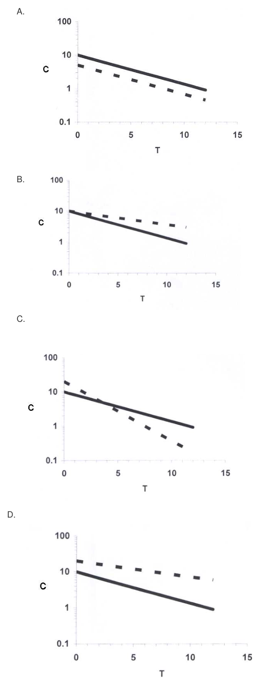

第 1 題待校
某一藥物（150 mg/mL）以零階次動力學降解，反應速率常數為2 mg/mL/h，請問該藥物到 達原濃度的80%需要多長的時間？
- （A）7.5 h
- （B）15.0 h
- （C）20.0 h
- （D）37.5 h
答案：（B）
這一頁是民國 103 年第 2 次藥師藥劑學與生物藥劑學的整份歷屆試題，共 80 題，題目與標準答案出自考選部「國家考試試題及測驗式試題答案」開放資料，其中 76 題附有詳解。以下逐題列出題幹、選項與答案；要計時作答或記錄成績，請用線上練習。
考選部原始場次代碼：103090
線上作答這一科 →第 1 題待校
答案：（B）
答案：（C）
正解：依從性包裝（compliance packaging）的早期設計目的，是讓固定每日服藥的順序可由包裝直接辨認；（C）口服避孕藥以週期性、每日一錠的服用模式，最早採用此類日曆式包裝，故選 C。
A： （A）抗生素雖需完成療程，但療程長度與每日頻次可不同，並非此類歷史上最早的典型依從性包裝。
B： （B）維生素可長期服用，但通常不涉及週期性的固定順序，包裝不必以日曆順序引導。
D： （D）綜合感冒藥多依症狀需要使用，沒有口服避孕藥的預定每日服用序列，故非答案。
本題考點：依從性包裝（compliance packaging）——固定日程、固定順序的藥物最適合以日曆或泡殼標示提醒；口服避孕藥包裝——判斷歷史上的典型產品時，著重其週期性每日服用的需求。
答案：（C）
正解：密度（density）是單位體積所含的質量，量綱必須為 mass/volume。（C）g/inch 的分母是長度而非體積，表示的是線密度，故選 C。
A： （A）lb/pint 是質量除以體積，可作為密度表示方式，故非答案。
B： （B）grain/mL 的分子為質量、分母為體積，符合密度的量綱，故非答案。
D： （D）oz/gallon 同樣是質量除以體積，符合密度表示方式，故非答案。
本題考點：密度量綱（density dimension）——先把單位拆成分子與分母，只有質量除以體積才是密度；線密度（linear density）——質量除以長度與一般藥劑學所稱密度不同，不能互換。
答案：（D）
正解：關鍵在兩液體是否可於任意比例形成單一液相。（D）液體酚與水是部分互溶系統，在一定組成下才可互溶，故選 D。
A： （A）乙醇與水可於任意比例互溶，不具題目所述的比例限制，故非答案。
B： （B）丙酮與水可於任意比例互溶，並非部分互溶的組合，故非答案。
C： （C）甘油與水也可於任意比例互溶，故非答案。
本題考點：互溶性（miscibility）——兩液體能否任意比例成單相，要先判斷其為完全或部分互溶；臨界溶解溫度（critical solution temperature）——部分互溶系統的相分離行為會隨溫度與組成改變。
答案：（B）
正解：硫酸亞鐵糖漿的安定重點是維持 Fe2+ 不易被氧化；（B）檸檬酸（citric acid）可提供有利於亞鐵鹽安定的酸性與配位環境，故選 B。
A： （A）碘化鉀不是此糖漿用來維持亞鐵鹽安定的成分，不能取代檸檬酸的安定作用。
C： （C）甘油主要調整黏度與作為保濕性輔料，不能處理 Fe2+ 易氧化的核心問題。
D： （D）酒精不是硫酸亞鐵糖漿的安定劑，亦無法提供題目所需的亞鐵鹽安定條件。
本題考點：亞鐵鹽氧化（ferrous salt oxidation）——含 Fe2+ 製劑須優先判斷如何抑制氧化；檸檬酸的安定作用（citric acid stabilization）——遇到硫酸亞鐵糖漿時，以酸性與配位環境維持亞鐵狀態。
答案：（C）
正解：USP 甲醛溶液在低溫時較易聚合生成白色結晶狀的 paraformaldehyde，因此（C）低溫是形成白色結晶的條件，故選 C。
A： （A）高溫不是使甲醛溶液析出 paraformaldehyde 白色結晶的主要條件，故非答案。
B： （B）高濕及高溫未指向低溫聚合析晶的情況，故非答案。
D： （D）低濕不是此溶液出現白色結晶的主要判準，關鍵在溫度降低，故非答案。
本題考點：甲醛聚合（formaldehyde polymerization）——甲醛溶液出現白色結晶時，先連結 paraformaldehyde 的形成；貯藏溫度（storage temperature）——對易聚合的溶液，低溫不一定增加安定性，須看是否促進析晶或聚合。
答案：（B）
正解：題幹限定中華藥典第七版，須依該版的注射用水（water for injection）規格判讀。該版規定注射用水得以蒸餾法或逆滲透法製備，（B）以「只可以」將製備方法限縮為蒸餾法，與該版規格不符，故選 B。
A： （A）每 mL 所含細菌內毒素不得超過 0.25 內毒素單位，是題幹所指版本的限度敘述，故非答案。
C： （C）注射用水本身不可直接供注射使用，此敘述正確，故非答案。
D： （D）注射用水不得含有抑菌劑，此敘述正確，故非答案。
本題考點：注射用水（water for injection）——WFI 與可直接注射的無菌製劑須分開判讀；藥典規格的版本判讀（pharmacopoeial specification）——題幹點名版本時，製法與限度均以該版規定為準。
答案：（A）
正解：界面活性劑濃度超過 CMC（critical micelle concentration）後，新增分子多形成 micelles；相對於自由單體，粒子數增加較少，因此滲透壓的上升趨勢會變緩，（A）正確，故選 A。
B： （B）離子性界面活性劑的當量導電度隨濃度增加而下降，未達 CMC 時以自由單體導電，下降較為平緩，超過 CMC 後因微胞（micelle）束縛反離子才使降幅轉陡；選項把方向寫成「上升」即已錯誤，故（B）敘述不正確。
C： （C）界面張力在達 CMC 後趨於平台，並非持續以較慢速度下降；分辨關鍵在接近不變而非仍在下降。
D： （D）增溶作用主要在 micelles 形成後才明顯，未達 CMC 時不能以溶解度較緩慢下降來描述，方向與機轉皆不符。
本題考點：臨界微胞濃度（critical micelle concentration）——超過 CMC 後，單體會轉為 micelles，使多項物性曲線改變斜率；滲透壓（osmotic pressure）——粒子數是判斷滲透壓的核心，聚集成微胞後有效粒子數增加較慢；界面張力（surface tension）——達 CMC 後通常進入近似平台。
答案：（D）
正解：非離子性界面活性劑的曇點會隨親水的 ethylene oxide 單元增加而提高。R 由 (CH2CH2O)8H 改為 (CH2CH2O)20H 後，水合能力較強，故相對於 37 °C 應選較高的 39 °C，故選 D。
A： （A）32 °C 比原本的 37 °C 低，與增加 ethylene oxide 單元後曇點上升的趨勢相反。
B： （B）35 °C 亦低於原本曇點，未反映親水性增加後較不易產生濁化的結果。
C： （C）37 °C 表示曇點完全不變，忽略了 R 基團由 8 個增加為 20 個 ethylene oxide 單元的影響。
本題考點：曇點（cloud point）——非離子性界面活性劑加熱混濁時，先看親水鏈長度對水合能力的影響；聚氧乙烯鏈（polyoxyethylene chain）——鏈段增加通常提高親水性並使曇點往較高溫移動。
答案：（C）
正解：HLB 越低代表越親油，越高代表越親水。（C）Span 80 為低 HLB 的 W/O 型界面活性劑，而 Tween 20 含親水的聚氧乙烯鏈、HLB 較高，因此 Span 80 < Tween 20，故選 C。
A： （A）Span 20、Span 40、Span 60、Span 80 的 HLB 不會依題列方向由低至高排列；隨脂肪酸部分改變，題列方向恰與實際趨勢相反。
B： （B）Tween 系列雖都含聚氧乙烯鏈，HLB 仍受脂肪酸部分影響，不能視為題列的單調遞增順序。
D： （D）同為 sorbitan ester 衍生物時，Tween 20 因加入聚氧乙烯鏈而比 Span 20 更親水，故（D）的大小關係相反。
本題考點：親水親油平衡值（hydrophilic-lipophilic balance）——先用低 HLB 親油、高 HLB 親水作方向判斷；Span 與 Tween（Span and Tween）——Tween 的聚氧乙烯化使 HLB 通常高於對應的 Span，可用於排除反向比較。
答案：（A）
正解：懸液劑要降低分散粒子間的電性阻礙以形成受控絮凝時，需用（A）電解質壓縮電雙層並降低 zeta potential，故選 A。
B： （B）助懸劑主要增加介質結構或懸浮能力，作用重點不是降低粒子間的電性排斥。
C： （C）稠化劑以提高連續相黏度、減慢沉降為主，不能直接壓縮電雙層使粒子凝集。
D： （D）濕潤劑用於改善粒子被液體潤濕與排除表面空氣，與降低電性阻礙的機轉不同。
本題考點：受控絮凝（controlled flocculation）——需要讓粒子適度凝集時，先看能否降低 zeta potential；電雙層壓縮（electrical double-layer compression）——加入電解質會減弱靜電排斥，促進絮凝；助懸與稠化（suspension and thickening）——兩者主要延緩沉降，不能取代電解質的電性作用。
答案：（C）
正解：Type A gelatin 以酸處理製得，等電點位於較高的 pH 範圍；其典型範圍為 pH 7-9，因此選（C），故選 C。
A： （A）pH 1-3 遠低於 Type A gelatin 的等電點範圍，故非答案。
B： （B）pH 4-6 較接近鹼處理的 Type B gelatin 所呈現的較低等電點範圍，故非答案。
D： （D）pH 11-13 遠高於 Type A gelatin 的典型等電點範圍，故非答案。
本題考點：明膠製程與等電點（gelatin processing and isoelectric point）——酸處理的 Type A gelatin 具有較高 pI，鹼處理的 Type B gelatin 偏低；等電點判讀（isoelectric-point interpretation）——題目問分散或沉澱傾向時，先比對配方 pH 與明膠 pI 的距離。
答案：（D）
正解：Chloropentafluoroethane 的分子式可寫為 C2ClF5。飽和鹵代烷的 Propellant 編碼中，115 對應兩個碳、零個氫與五個氟，餘下鹵素為氯，與此分子式相符，故選 D。
A： （A）Propellant 216 依同一編碼（代號加 90 後所得三位數依序為碳、氫、氟原子數）拆解，216 加 90 得 306，即三個碳、零個氫與六個氟，餘位補氯後為 C3Cl2F6，碳數與氟數都與 C2ClF5 不同，不能代表 C2ClF5。
B： （B）Propellant 215 加 90 得 305，為三個碳、零個氫與五個氟，餘位補氯後為 C3Cl3F5；雖同樣是五個氟，碳數卻多一個，不對應 Chloropentafluoroethane 的兩碳、零氫、五氟組成，故非答案。
C： （C）Propellant 126 加 90 得 216，拆為兩個碳、一個氫與六個氟，氫與氟合計七個位置已超出乙烷可取代的六個位置，也沒有位置留給氯，不符合 C2ClF5 的編碼條件，故非答案。
本題考點：鹵代烷推動劑編碼（halocarbon propellant nomenclature）——先由代號拆出碳、氫與氟原子數，再補足其餘鹵素；Chloropentafluoroethane——分子式 C2ClF5 對應 Propellant 115，可避免只憑名稱猜代號。
答案：（A）
正解：polymer 在低濃度只部分吸附於厭水性膠體表面時，可能在粒子間形成橋接而促進凝結；濃度升高、表面覆蓋完整後才轉為保護作用。這個低濃度反而促凝的現象稱為 sensitization，故選 A。
B： （B）Steric stabilization 指 polymer 充分覆蓋粒子後產生空間阻礙、避免聚集的保護效果，未包含低濃度促凝的現象。
C： （C）Charge stabilization 依賴粒子表面電荷造成的靜電排斥，與 polymer 部分吸附造成橋接凝結的機轉不同。
D： （D）Protective action 描述 polymer 高濃度時保護厭水性膠體的結果，不能命名題幹所問的低濃度促進凝結現象。
本題考點：敏化（sensitization）——polymer 覆蓋不足時可能橋接多個粒子並促進凝結；空間安定化（steric stabilization）——表面覆蓋充分時，polymer 的空間阻礙才會防止聚集；橋接絮凝（bridging flocculation）——同一 polymer 濃度改變可使系統由促凝轉為保護，判斷時要看表面覆蓋程度。
答案：（A）
正解：直腸吸收速率取決於藥物由基劑釋出、在直腸液中溶解及與直腸黏膜接觸的情形；（A）栓劑的形狀主要影響插入與留置便利性，並非這些傳輸步驟的主要決定因子，故選 A。
B：基劑組成會改變藥物的分配、熔融或溶解與釋出速度，因此會影響吸收速率。
C：藥物須先形成可吸收的溶解狀態，溶解度會限制可供黏膜吸收的藥量與速率。
D：直腸內容物可改變藥物與黏膜的接觸及局部液體環境，故可影響吸收。
本題考點：直腸給藥吸收（rectal drug absorption）——先分成基劑釋出、藥物溶解與黏膜接觸三步，能改變任一步者都可能影響速率；栓劑設計（suppository design）——形狀主要配合解剖與投與性，與基劑及藥物性質的釋放控制作用不同。
答案：（C）
正解：煤焦油軟膏同時含液態煤焦油、粉體氧化鋅與澱粉，以及軟石蠟基劑。先以軟石蠟潤濕分散氧化鋅，再加入澱粉，最後混入煤焦油的（C）次序，較能避免粉末結團並得到細緻均勻質地，故選 C。
A：先讓氧化鋅接觸煤焦油，容易形成局部濃稠團塊，之後再加軟石蠟不易完全打散。
B、D：兩者都沒有先以軟石蠟處理氧化鋅；（B）在粉體分散前先加入煤焦油，（D）更將氧化鋅留到最後加入，均不利於細粉均勻分散。
本題考點：軟膏調製次序（ointment compounding sequence）——先使不溶性細粉被適量基劑潤濕，再分次併入其餘成分，可減少結團；研和（levigation）——以相容的液體或基劑磨細分散粉末，判斷重點是降低粗粒與局部濃集。
答案：（A）
正解：完全不含油脂成分的軟膏基劑須由水溶性聚合物構成；（A）聚乙二醇軟膏由不同分子量的 polyethylene glycol 組成，可溶於水而不需油性烴類或蠟類，故選 A。
B：白軟膏屬油脂性基劑，主要含白軟石蠟與蠟類，不能完全不含油脂成分。
C：親水軟膏雖可用水洗除，配方仍含油性成分與乳化系統，並非純水溶性基劑。
D：消散乳霜是乳劑型基劑，油相含脂肪酸等成分，塗布後水分蒸發才呈現不油膩感。
本題考點：水溶性軟膏基劑（water-soluble ointment base）——要找完全不含油相的基劑時，選 polyethylene glycol 類；親水性與無油性（hydrophilicity versus greaselessness）——可被水洗除的乳劑基劑仍可能含有油相，不能僅憑名稱判定。
答案：（B）
正解：消散乳霜是塗布後水相蒸發、留下薄而不油膩膜的 o/w 乳劑；（B）硬脂酸是其主要油相成分，部分可被鹼中和形成具乳化作用的脂肪酸皂，故選 B。
A：油酸為液態不飽和脂肪酸，可作潤膚成分，但不是消散乳霜建立稠度與油相骨架的主成分。
C：礦物油常用於較油潤的乳霜或軟膏基劑，不能取代硬脂酸在消散乳霜中的主要作用。
D：蜜蠟可增加油性製劑稠度，較常作結構或輔助成分，並非本題所問的主要油相。
本題考點：消散乳霜（vanishing cream）——看到塗後不油膩的乳霜時，判斷其為水相可蒸發的 o/w 系統；硬脂酸乳化系統（stearic acid soap emulsion）——硬脂酸兼具油相與形成脂肪酸皂乳化劑的角色，是此類配方的辨識線索。
答案：（B）
正解：水溶性栓劑基劑的特徵是能在直腸液中溶解，而非只靠體溫融化；（B）聚乙二醇可藉不同分子量組合形成固體栓劑，使用後再溶於體液，是最常用的水溶性基劑，故選 B。
A：丙二醇主要作共溶媒或保濕劑，常溫為液體，不能單獨提供栓劑所需的固體基劑性質。
C：乙醇具揮發性且為液體，並不適合作為可模製的水溶性栓劑基劑。
D：明膠須與甘油及水組成甘油明膠基劑才可用於栓劑，並非最常用的水溶性栓劑基劑。
本題考點：水溶性栓劑基劑（water-soluble suppository base）——判斷重點是給藥後以體液溶解釋放，常見代表為 polyethylene glycol；栓劑釋放機制（suppository drug release）——脂肪性基劑多以熔融釋放，水溶性基劑則以溶解釋放，兩者不可混用。
答案：（D）
正解：水溶性軟膏基劑必須不含油相且可溶於水；（D）聚乙二醇能組成可水洗、可溶解的半固體基劑，符合水溶性軟膏基劑的定義，故選 D。
A：軟石蠟是典型油脂性烴基基劑，具封閉性但不溶於水。
B：羊毛脂屬吸收性基劑，可吸收一定量水分形成乳劑，卻不是水溶性基劑。
C：蠟用於增加油性基劑的硬度與結構，不能使基劑成為水溶性。
本題考點：水溶性軟膏基劑（water-soluble ointment base）——選擇基劑時先判斷是否含油相與能否被水洗除，polyethylene glycol 類符合兩項；吸收性基劑（absorption base）——能吸收水分不等於本身溶於水，羊毛脂是常見誘答。
答案：（C）
正解：霜劑是乳劑型半固體，必須同時有油相與水相；（C）烴基基劑僅由油性烴類組成，沒有形成乳劑所需的水相，屬油脂性軟膏基劑而非霜劑基劑，故選 C。
A：w/o 乳劑以油相為連續相、水相為分散相，可構成較油潤的霜劑。
B：o/w 乳劑以水相為連續相，可構成較易水洗除的霜劑。
D：水和性基劑可藉吸收水分或乳化系統形成乳劑型半固體，屬霜劑可用的基劑類型。
本題考點：霜劑基劑（cream base）——先問是否為油、水兩相的乳劑，w/o 與 o/w 都可作霜劑；烴基基劑（hydrocarbon base）——只有油性連續相時屬軟膏基劑，不會因質地柔軟就成為霜劑。
答案：（B）
正解：是否需在栓劑模上塗潤滑劑，取決於基劑冷卻後能否收縮離模；（B）Glycerinated gelatin 凝膠化後與模壁黏著性高，不會如脂肪性基劑般明顯收縮，因此模製前須塗潤滑劑，故選 B。
A：Witepsols 為脂肪性硬脂基劑，冷卻時可收縮並與模壁分離，通常不必潤滑。
C：Carbowaxes 屬 polyethylene glycol 類基劑，冷卻固化時體積會收縮而自模壁脫離，在題目所列模製情境可自行離模，與 A、D 的脂肪性基劑同屬不必潤滑者，並非必須使用潤滑劑的基劑。
D：Wecobees 為可於冷卻後收縮離模的基劑，通常不列為必須潤滑者。
本題考點：栓劑模製與潤滑（suppository molding and lubrication）——冷卻收縮且不黏模的基劑可直接脫模；甘油明膠基劑（glycerinated gelatin base）——黏著性高時以潤滑劑降低模壁附著，避免成品破損。
答案：（A）
正解：題幹限定中華藥典第七版的甘油明膠栓劑規格；（A）把多種一般栓劑可採用的製法一併列入，但甘油明膠栓劑以熔融、灌模法製備，不以捏合法與壓製法作為此製劑的標準製法，故選 A。
B：甘油約佔配方的 70%，可提供基劑柔軟性與保濕性，符合甘油明膠栓劑的組成特徵。
C：混合時避免帶入空氣可減少氣泡與重量、外觀不均，故此敘述不是錯誤處。
D：甘油明膠基劑具吸濕性，置緊密容器並於 35℃以下貯存可減少物性改變，故此敘述正確。
本題考點：甘油明膠栓劑（glycerinated gelatin suppository）——遇到此基劑時，判斷其以熔融後灌模成形，不把脂肪性栓劑的捏合或壓製法直接套入；藥典規格（pharmacopoeial specification）——題幹限定特定版本時，組成與貯存條件須依該版本逐項判讀。
答案：（A）
正解：脆度以錠片在規定翻轉磨損後的重量損失比例表示，一般錠片可接受的上限為 1%；（A）符合此品質界限，故選 A。
B：2% 已超過一般錠片的可接受脆度，表示耐受包裝與運送磨損的能力不足。
C：3% 的重量損失更高，不能視為一般錠片的合格脆度。
D：4% 顯示錠片極易在操作中崩損，遠超出可接受範圍。
本題考點：錠片脆度（tablet friability）——以磨損後重量損失百分率判讀，一般錠片的界限為不超過 1%；錠片機械強度（tablet mechanical strength）——脆度檢查的是運輸與包裝耐受性，與硬度或崩散時間的判讀目的不同。
答案：（C）
正解：濕式造粒若採非水性溶媒，黏合劑必須能在該溶媒中形成黏結液；（C）Povidone 可溶於適當非水性溶媒，能將粉體黏結成顆粒，故選 C。
A：Gelatin 通常須配成加熱的水溶液作黏合液，不適合本題的非水性溼式造粒條件。
B：Starch 常以澱粉糊作為水性黏合劑，不能作為此條件下的代表選項。
D：Glucose 的黏合作用主要仰賴水溶液，無法取代 Povidone 的非水性黏結液用途。
本題考點：濕式造粒（wet granulation）——先依製程溶媒選能溶解的黏合劑，不能只看其是否具有黏合作用；Povidone（polyvinylpyrrolidone）——可在水性或適當非水性系統形成黏結液，是非水性造粒的常見判別點。
答案：（B）
正解：糖衣需反覆加糖漿、乾燥與拋光，各次包衣量的微小差異會累積；（B）糖衣錠的重量較不一致，是相較於薄量且可控制噴灑的膜衣錠最明顯的性質差異，故選 B。
A：錠核中的藥物含量不會因糖衣製程本身成為最大的不均一來源；糖衣增重影響的是整錠重量。
C：糖衣可形成平滑、有光澤且可著色的外觀，外觀較不順眼不是其固有差異。
D：糖衣與膜衣都可提供一定保護作用，不能以長期儲存較不安定作為兩者最大的錠片性質區別。
本題考點：糖衣包覆（sugar coating）——多次加衣會使增重幅度大且批內重量變異增加；膜衣包覆（film coating）——薄膜量少、噴灑控制性高，判斷時以製程造成的重量一致性差異來比較。
答案：（A）
正解：依中華藥典第七版，生藥粗粉的粒度判斷先看「所有粉粒均應通過」的篩號；（A）第20號標準試驗篩符合此規定，故選 A。
B：第40號篩的孔徑較小，要求所有粉粒通過會使粒度比粗粉更細，不是本題規格。
C：第60號篩代表更細的篩分程度，不能作為生藥粗粉所有粒子的通過篩號。
D：第100號篩的孔徑最小，對應遠較細的粉末等級，與粗粉不符。
本題考點：生藥粉末粒度（crude drug powder size）——題幹問所有粉粒的通過篩號時，要先辨識粉末等級再選規定篩號；標準試驗篩（standard test sieve）——篩號越大孔徑越小，粒度要求越細，不能把數字大小誤當顆粒大小。
答案：（B）
正解：顆粒劑相較於散劑具有較小的總表面積與較少粉粒接觸點，因此較不易吸濕後彼此黏結或變硬；（B）符合顆粒劑在大氣中的安定性優勢，故選 B。
A：散劑粒徑較小、總表面積較大，通常反而較容易吸濕，敘述方向相反。
C：顆粒劑可減少粉塵並利於分散或復溶，不能因其粒徑較大就判為臨用加水時較難完成。
D：水中不安定藥物可考慮臨用前復溶，但此敘述未構成顆粒劑與散劑的相對優勢，且仍須考量復溶後的可使用時間。
本題考點：顆粒劑與散劑（granules versus powders）——比較吸濕與結塊時，看總表面積和粉粒接觸點，顆粒通常較有利；復溶製劑（reconstitution）——水中不安定藥物可延後接觸水，但劑型優劣仍須比較分散性與復溶後安定性。
答案：（B）
正解：本題從產品安定性及成本選擇處理法；（B）氧化鋅為耐熱的無機粉末，可用乾熱法加熱至 170℃進行滅菌，兼顧其物性與製程可行性，故選 B。
A：胰島素是蛋白質，噴霧乾燥的熱與氣液界面應力可能降低其活性，不是優先的乾燥選擇。
C：凍晶乾燥成本高，主要用於需嚴格保護的熱敏高價產品；將甘草流浸膏製成粉末不宜優先採用此法。
D：蛋白銀膠體的粒子可通過一般濾紙或受濾紙吸附，濾紙過濾不能用來取得其固體粉末。
本題考點：乾熱滅菌（dry heat sterilization）——耐熱、無水的無機粉末可考慮乾熱處理；蛋白質乾燥（protein drying）——選擇乾燥法時先看熱與界面壓力是否會損害活性；膠體分離（colloidal separation）——一般濾紙不能有效回收膠體粒子為固體粉末。
答案：（C）
正解：離子交換樹脂可先與藥物形成複合物，使藥物在口腔中不易立即游離；（C）利用此特性降低苦味藥物對味覺的刺激，正是離子交換輸藥系統的用途之一，故選 C。
A：陽離子交換樹脂的固定官能基帶負電，應與帶正電的藥物結合；把樹脂本身寫成帶正電，電荷關係不符。
B：樹脂－藥物複合物外可加包衣以調控水分與離子進入，並非一律不適合包衣。
D：藥物釋放主要受離子交換、擴散及外界離子濃度影響，不能只由藥物溶解度決定。
本題考點：離子交換輸藥系統（ion-exchange drug delivery system）——先判斷樹脂固定電荷與藥物電荷是否相反，再考慮交換釋放；味覺遮蔽（taste masking）——複合物在口腔中限制游離藥物，可降低苦味；包衣調控釋放（coating-modified release）——包衣可改變離子與水分進入速率，不是離子交換系統的禁忌。
答案：（C）
正解：主成分的溶解度會直接決定溶離速率與可供吸收的藥量；（C）溶解度改變可能連帶改變錠片功效，因此屬須審慎評估並依規定核准的關鍵物理特性，故選 C。
A：黏彈度主要影響粉體受壓時的變形與成錠行為，未必直接改變藥物自錠片溶出的能力。
B：脆裂度通常用於評估成錠後的機械耐受性，並非主成分變更最直接影響療效的特性。
D：塑化度會影響壓錠製程與錠片結構，但與溶離及生體可用率的直接關聯較溶解度小。
本題考點：溶解度（solubility）——原料性質一旦改變溶離與吸收，需優先評估對療效的影響；原料關鍵品質屬性（critical material attributes）——判斷變更影響時，區分直接改變體內可用性的性質與主要影響壓錠製程的性質。
答案：（A）
正解：自然免疫指個體未經特定抗原刺激即具有的先天抵抗力，可依物種、種族或個人差異分類；（A）Passive immunity 是由外來抗體移轉而得，屬獲得性免疫而非自然免疫，故選 A。
B：Individual immunity 指個體間先天抵抗力的差異，屬自然免疫的分類之一。
C：Racial immunity 指同一種族或族群對特定病原體的先天抵抗差異，屬自然免疫。
D：Species immunity 指不同物種對病原體的天然不易感受性，是自然免疫的典型分類。
本題考點：自然免疫（natural immunity）——未靠特定抗原刺激而存在的抵抗力，可從物種、種族與個體層次判讀；被動免疫（passive immunity）——抗體由外部移入而非自行產生，分類時歸入獲得性免疫。
答案：（A）
正解：比較病原體體積時，先區分病毒與細菌，再比較病毒的類別；（A）Influenza virus 為小型病毒，較 Pseudomonas 與 Salmonella typhosa 等細菌小，也較痘病毒類的 Smallpox virus 小，故選 A。
B：Pseudomonas 是細菌，細胞結構與體積均遠大於一般病毒。
C：Salmonella typhosa 亦為細菌，不會小於 Influenza virus。
D：Smallpox virus 屬痘病毒類，在病毒中體積相對大，不能作為最小者。
本題考點：病原體大小比較（pathogen size comparison）——先把細菌與病毒分開，細菌通常大於病毒；病毒形態分類（virus morphology）——痘病毒相對大，流感病毒屬較小病毒，遇到跨類別選項可先用此排序排除。
答案：（B）
正解：注射劑若有易氧化成分，需加入可優先被氧化的還原性抗氧化劑；（B）Ascorbic acid 具有還原性，常用以抑制注射劑中藥物的氧化降解，故選 B。
A：Acetic acid 主要用於酸化或調整 pH，不是常用的還原性注射劑抗氧化劑。
C：Citric acid 可作緩衝或螯合輔助成分，但不屬本題所問的常用還原性抗氧化劑。
D：Phosphoric acid 主要用於調整 pH 或形成緩衝系統，不能直接取代抗氧化劑。
本題考點：注射劑抗氧化劑（parenteral antioxidants）——判斷重點是能以還原作用或其他抗氧化機制保護易氧化藥物，Ascorbic acid 是常見代表；pH 調整劑（pH adjuster）——酸類可用於調整酸鹼度或緩衝，功能不等同於直接抗氧化。
答案：（C）
正解：本題判斷的是注射劑輔料的功能。抗氧化劑用來抑制藥物或賦形劑的氧化分解；（C）Thimerosal 是含汞的抑菌防腐劑，主要用於抑制微生物，並非阻止氧化反應，因此不屬於抗氧化劑，故選 C。
A：Ascorbic acid 具有還原性，可作為水性製劑的抗氧化劑，藉由優先被氧化來保護易氧化成分。
B：Butylhydroxy anisole 為酚類抗氧化劑，常用於保護脂溶性或油相中易氧化的成分；其功能不是抑菌。
D：Tocopherol 可終止脂質自由基連鎖反應，屬脂溶性抗氧化劑，與題幹所問的功能相符。
本題考點：注射劑抗氧化劑（antioxidants）——先看輔料是防止氧化分解還是抑制微生物，兩種功能不可混為一談；抑菌防腐劑（antimicrobial preservatives）——用於降低製劑受微生物污染的風險，不能因具有輔料身分就歸為抗氧化劑。
答案：（D）
正解：依題幹指定的眼用軟膏金屬粒第二階段規格，50 µm及以上粒子的判讀要同時看個別檢品與30個檢品的總量。含8粒以上的檢品不得超過3個，粒子總數不得超過150粒，因此（a，b）為（3，150），故選 D。
A：（1，5）把個別檢品數與總粒數都壓得遠低於第二階段的限度，不能作為題幹所述的合格標準。
B：（1，50）的個別檢品限度仍誤為1個，且總粒數50粒也不是第二階段所定的總量上限。
C：（3，50）雖保留了a為3的個別檢品限度，但把b誤列為50；30個檢品的粒子總數上限應為150。
本題考點：眼用軟膏金屬粒檢查（metal particles test）——先分開判讀單一檢品的粒子門檻與全數檢品的總粒數，兩個限度必須同時符合；藥典規格判讀（pharmacopoeial specification）——題幹指定粒徑與檢查階段時，須配對該階段的個別與總量標準，不能混用不同條件。
答案：（B）
正解：關鍵在四種胰島素製劑的作用時間。Insulin glargine 為長效基礎胰島素，藉其製劑特性延長皮下吸收與作用，因此在列出的製劑中藥效維持最久，故選 B。
A：Insulin aspart 是速效胰島素類似物，設計目的在餐前快速起效，作用時間不及長效的（B）Insulin glargine。
C：Isophane（NPH）insulin 為中效懸浮製劑，作用比短效製劑延長，但仍不是四者中最久。
D：Regular insulin 為短效胰島素，起效與作用持續時間均短於中效與長效製劑。
本題考點：胰島素作用時間分類（insulin duration of action）——比較製劑時先分成速效、短效、中效與長效，題目問最久時選長效基礎胰島素；基礎胰島素（basal insulin）——用於提供較持久的背景胰島素效果，與餐時快速控制的製劑用途不同。
答案：（D）
正解：本題要同時滿足無菌、無內毒素與僅供外用三個條件。Sterile water for irrigation 含有注射用水所要求的品質特性，但用途是沖洗等外用用途，不供靜脈注射，故選 D。
A：Sterile water for injection 為無菌的注射用水，主要作為注射製劑的溶媒或稀釋用水，使用情境不限定為僅供外用。
B：Purified water 的品質要求不等同於無菌且無內毒素的注射用水要求，因此不符合題幹的完整條件。
C：Sterile purified water 雖有無菌要求，規格基礎仍是 purified water，不能據此推定同時符合注射用水的無內毒素要求。
本題考點：藥用水分類（pharmaceutical waters）——判讀時要分別確認基礎水質、無菌性、內毒素要求與最終用途，名稱相近不能互換；沖洗用無菌水（sterile water for irrigation）——品質可達無菌與低內毒素要求，但標示用途是外部沖洗而非注射。
答案：（C）
正解：關鍵在防腐劑的水溶解度與配方中的有效濃度。Parahydroxybenzoic acid esters 的水溶解度較差，常以同類但性質不同的兩種酯類併用，兼顧水相可用濃度與防腐效果，因此（C）最符合題意，故選 C。
A：Quaternary ammonium compounds 的典型判斷重點是陽離子型抑菌作用與配方相容性，不是以同類兩種化合物併用來解決低水溶解度的代表類別。
B：Organic mercurials 是另一類抑菌防腐劑；題幹所述因水溶解度不足而常採兩種同類化合物組合的作法，並非其典型辨識特徵。
D：Substituted alcohols and phenols 可作防腐劑，但不以兩種同類成分併用來調整較差水溶解度作為主要判準。
本題考點：對羥基苯甲酸酯類（parahydroxybenzoic acid esters）——遇到水溶性不足時，判斷重點是以同類不同酯類組合來平衡溶解度與防腐效能；製劑防腐效能（preservative efficacy）——有效性取決於配方中可用濃度與微生物抑制能力，不能只看單一成分的名義添加量。
答案：（D）
正解：題幹問的是 benzyl alcohol 作為注射劑抑菌劑時的最高容許濃度。依題目所用的注射劑規格，其最大限度為2%，因此（D）是上限值，故選 D。
A：0.01%遠低於2%，可作為較低的濃度數值，但不是題目所問的最大限度。
B：0.5%也是2%以下的濃度；把常見較低添加量當成規格上限，會少掉題目要求的最高界線。
C：1%雖接近（D）2%，仍僅為上限的一半，不能取代最大容許濃度。
本題考點：注射劑抑菌劑濃度（parenteral antimicrobial preservative concentration）——題目問最大限度時，要區分實際配方可用的較低濃度與規格容許上限；benzyl alcohol——辨認其在此題的角色是抑菌劑，並以題幹指定規格的濃度上限作答。
答案：（B）
正解：濕熱滅菌時，存活微生物數隨時間的下降可用一級反應表示，式為dN/dt = −kN；也就是每一單位時間減少固定比例的存活菌數，而非固定數目。因此最接近一級反應，故選 B。
A：零級反應代表每單位時間減少固定量，不能描述滅菌常用的存活菌數對數線性下降關係。
C：二級反應的速率會與濃度平方相關，並非濕熱殺菌曲線所採用的基本模型。
D：三級反應需要速率與濃度三次方相關，與微生物熱致死的標準近似不符。
本題考點：微生物熱致死動力學（microbial thermal death kinetics）——判讀滅菌時間與存活菌數時，以每單位時間去除固定比例的概念判為一級反應；對數存活曲線（log survivor curve）——存活數取對數後與時間近似線性時，代表其死亡遵循一級速率。
答案：（C）
正解：本題問錯誤敘述。蒸氣滅菌以濕熱促進微生物蛋白質變性，通常比乾熱更有效率；因此（C）稱乾熱滅菌較蒸氣滅菌有效，剛好顛倒兩者的相對效能，故選 C。
A：乾熱滅菌約在160–170 °C操作是傳統的適用條件之一，故此敘述正確，並非答案。
B：玻璃器皿及可耐高溫的外科器械適合乾熱滅菌，因其可承受高溫且不宜受潮，故此敘述正確。
D：過濾滅菌是以濾材截留微生物，可在低溫下進行，適合不耐熱的液體，故此敘述正確。
本題考點：乾熱與濕熱滅菌（dry heat versus moist heat sterilization）——比較效能時，濕熱的蛋白質變性作用通常較迅速，不能把乾熱說成較有效；過濾滅菌（filtration sterilization）——熱敏感液體要以濾除微生物的方式處理，而非用高溫殺滅。
答案：（C）
正解：依題幹所指以 Coulter counter 檢測大體積注射劑的微粒規格，粒徑大於等於25 µm者的粒子數上限為3/mL，因此（C）符合該粒徑門檻，故選 C。
A：25/mL高於25 µm粒子的容許上限；不能把另一粒徑門檻所見的數值挪用到本題的25 µm條件。
B：12/mL同樣超過大於等於25 µm粒子的3/mL上限，粒徑門檻與數量限度必須一起判讀。
D：2/mL雖比3/mL更嚴格，但題目問的是藥典規定的上限值，應答出指定限度3/mL。
本題考點：注射劑微粒檢查（particulate matter test）——先鎖定粒徑切點，再對應每mL的粒子數上限，不能只記一個數字；Coulter counter——此法以粒子計數評估懸浮微粒，規格判讀時須同時保留檢測方法與粒徑條件。
答案：（B）
正解：無菌操作的層流設備必須在關鍵作業區提供高度潔淨、單向流的過濾空氣；題幹所用分級要求為Class 100，因此（B）正確，故選 B。
A：Class 10屬更嚴格的分級，但不是題幹所問層流設備的指定清淨度名稱；分級題應依規定等級作答。
C：Class 1000允許的微粒濃度高於Class 100，清淨度不足以符合題幹的無菌操作區要求。
D：Class 10000比Class 1000更不潔淨，更不能作為層流設備所提供空氣的規定等級。
本題考點：層流設備（laminar airflow equipment）——無菌操作時要以單向、過濾後的空氣保護關鍵區域；潔淨度分級（cleanliness classification）——數字較小代表容許微粒較少，但考題問指定規格時仍須答出對應的分級名稱。
答案：（A）
正解：本題以除了何者外來問不會延遲胃排空的情況。Metoclopramide 可促進上消化道蠕動並加快胃排空，所以（A）是四者中不屬於延遲胃排空的選項，故選 A。
B：激烈運動會使胃腸道血流與運動狀態改變，常使胃排空延遲，故仍屬題幹所列的延遲因素。
C：大量飲酒在未嘔吐的情況下仍可抑制胃運動，延緩胃內容物排出；不能因酒精是液體就推定會加快排空。
D：靠左側躺時胃內容物相對幽門的位置不利於排出，通常較右側臥延遲胃排空，故不是例外。
本題考點：胃排空（gastric emptying）——判斷口服藥吸收前的胃排空時，分辨促胃腸蠕動藥與抑制胃運動的情境；metoclopramide——作為促動力藥（prokinetic agent）時可加快胃排空，與延遲排空的因素方向相反。
答案：（D）
正解：關鍵在於Phase II反應並非一律只會解毒。Acetylation及mercapturic acid conjugation在特定藥物或代謝物上可能產生或伴隨毒性反應；（D）以可能描述這個例外，因此最為正確，故選 D。
A：Phase I反應包括氧化、還原與水解等官能基化反應，通常歸為非合成性反應，故此敘述本身正確；但它只是Phase I的定義複述，屬教科書既有分類。題幹問的是「最為正確」，（D）點出Phase II並非一律解毒的例外——acetylation所生的代謝物可具毒性，mercapturic acid途徑耗竭glutathione後亦可致毒——涵蓋的判斷層次高於單純定義，故本題取D而非A。
B：Phase II反應可直接作用於帶有適當官能基的原型藥物，並不必然要先經Phase I反應。
C：最常見的Phase II反應是glucuronidation，不是amide conjugation；兩者的常見程度不可互換。
本題考點：藥物代謝第一、二相（Phase I and Phase II metabolism）——第一相多為官能基化，第二相多為結合反應，但兩相不必依固定順序發生；結合反應的例外（conjugation exceptions）——看到一律解毒或一定先後的絕對敘述時，須檢查是否忽略代謝物的毒性與直接結合途徑。
答案：（A）
正解：本題的關鍵是α1-acid glycoprotein（AAG）主要結合鹼性藥物。Imipramine 為鹼性且與AAG結合；AAG增加時，血中結合型使總濃度上升，但可自由穿越血腦障壁的未結合分率下降，所以腦中濃度會下降，故選 A。
B：Salicylates 為酸性藥物，主要的蛋白結合對象是albumin，不符合題幹以AAG升高來預測血中與腦中濃度反向變化的條件。
C：Phenylbutazone 也是偏向與albumin結合的酸性藥物；分辨關鍵在蛋白結合偏好，不是只看其血漿蛋白結合率高低。
D：Penicillins 不具題幹所需的典型鹼性AAG高親和力配對，因此不能由AAG增加推得（A）所示的濃度變化。
本題考點：α1-acid glycoprotein（AAG）結合——鹼性藥物遇到AAG上升時，先分開判讀總濃度與未結合濃度；血腦障壁通透（blood-brain barrier penetration）——能進入腦部的主要是未結合藥物，總血中濃度上升不代表腦中濃度也上升；albumin binding——酸性藥物的蛋白結合判讀應優先連結albumin。
答案：（C）
正解：一次排除的腎排泄速率常數要先由半衰期求總排除速率常數，再乘上原型尿排泄分率。先算k = 0.693 / t½ = 0.693 / 4 h = 0.17325 h^-1。原型藥物尿中排出60%，即fe = 0.60，故ke = fe × k = 0.60 × 0.17325 h^-1 = 0.10395 h^-1，約為0.10 h^-1，故選 C。
A：0.17 h^-1約為總排除速率常數k，尚未乘上原型尿排泄分率0.60，故高估了ke。
B：0.12 h^-1未能由題幹的k與fe正確相乘得到；腎排泄只占總排除的60%，不應接近總k。
D：0.07 h^-1低於0.60 × 0.17325 h^-1的結果，與題幹給定的原型尿排泄分率不符。
本題考點：一級排除半衰期（first-order elimination half-life）——先以k = 0.693 / t½求總排除速率常數；原型尿排泄分率（fraction excreted unchanged, fe）——腎排泄速率常數以ke = fe × k換算，不能把總k直接當作ke。
答案：（D）
正解：連續靜脈輸注的穩定濃度用Css = R0 / CL，而達穩定狀態的快慢由排除速率常數k決定。甲藥Css = 10 mg/h / 8 L/h = 1.25 mg/L；乙藥Css = 20 mg/h / 16 L/h = 1.25 mg/L。再算t½，甲為0.693 / 0.7 h^-1 = 0.99 h，乙為0.693 / 0.3 h^-1 = 2.31 h；乙藥半衰期較長，到達穩定濃度所需時間較長，故選 D。
A：甲藥的穩定濃度應為1.25 mg/L，不是4.2 mg/L；4.2 mg/L無法由R0 = 10 mg/h、k = 0.7 h^-1與CL = 8 L/h的任一組合得出，連續輸注的穩定濃度只看Css = R0 / CL，代入即得1.25 mg/L。
B：乙藥的Css同樣是1.25 mg/L，與甲藥相等而非較低；比較穩定濃度時看R0 / CL。
C：甲藥k為0.7 h^-1，半衰期比乙藥短，故較快接近穩定狀態，不能說所需時間較長。
本題考點：連續輸注穩定濃度（steady-state concentration during infusion）——用Css = R0 / CL，比較時不要以k取代CL；到達穩定狀態（time to steady state）——主要由半衰期決定，k較小、t½較長者需要較久。
答案：（A）
正解：本題求的是一次動力學的總排除速率常數，直接由殘餘量與時間套用At = A0e^-kt。整理得k = ln（A0 / At）/ t = ln（256 mg / 1 mg）/ 48 h。因256 = 2^8，ln 256 = 8 × 0.693 = 5.544，故k = 5.544 / 48 h = 0.1155 h^-1，約為0.115 h^-1，故選 A。題幹的20%肝臟代謝不另行代入，因殘餘量已反映全部排除途徑。
B：0.092 h^-1低於由256 mg降至1 mg、歷時48 h所算出的0.1155 h^-1，會預測48 h後殘留量高於1 mg。
C：0.069 h^-1更低，代表排除較慢，無法在題幹給定的48 h內使256 mg降至1 mg。
D：0.023 h^-1遠低於計算結果，對應的排除速度明顯不足，與殘餘量資料不符。
本題考點：一次排除模型（first-order elimination model）——已知初始量、殘餘量與時間時，用k = ln（A0 / At）/ t直接求總排除速率常數；總排除與器官分率（total elimination versus organ fraction）——題目若給的是體內總殘餘量，先求總k，不能把個別器官代謝分率誤當成額外的必要換算。
答案：（A）
正解：drug disposition 指藥物進入體循環後在體內的分布、代謝與排泄過程。吸收是藥物由給藥部位進入體循環的過程，發生在disposition之前，因此不包括在drug disposition內，故選 A。
B：分布是藥物在血液與組織間移動的過程，屬於drug disposition的核心內容。
C：代謝改變藥物或代謝物的化學結構與清除性質，屬於drug disposition。
D：排泄是將藥物或其代謝物自體內移除的過程，同樣屬於drug disposition。
本題考點：藥物動態學ADME（absorption, distribution, metabolism, excretion）——先分清吸收是進入體循環，distribution、metabolism與excretion則是進入後的體內動向；藥物體內動向（drug disposition）——遇到術語題時，將其限定為DME，可排除absorption。
答案：（D）
正解：Loo-Riegelman方法用於二室模型口服藥物的吸收分析，需以藥物處置參數校正濃度—時間資料後求未吸收分率。其中包含排除速率常數等必要參數，所以（D）說不需要知道排除速率常數是錯誤敘述，故選 D。
A：此法可將未吸收分率與時間作圖，以取得吸收速率常數，故此敘述正確。
B：Loo-Riegelman方法正是為二室藥物動力學模型發展的分析方法，故適用於題述情境。
C：二室模型需考慮中央室與周邊室間的分布，故需要相關分布速率常數，不能只以單室模型處理。
本題考點：Loo-Riegelman方法（Loo-Riegelman method）——口服藥物若呈二室處置，須用此法從濃度資料估算吸收；處置速率常數（disposition rate constants）——吸收與分布、排除要分開校正，計算未吸收分率時不可省略排除參數。
答案：（B）
正解：三室模型濃度式中每個指數項的AUC皆為係數除以其速率常數，因此AUC = 75 / 2.5 + 36 / 1.8 + 21 / 0.3。逐項計算為30 mg·h/L、20 mg·h/L與70 mg·h/L；總和為30 + 20 + 70 = 120 mg·h/L，故選 B。
A：100 mg·h/L只相當於30與70相加，漏掉了中間項36 / 1.8 = 20 mg·h/L。
C：140 mg·h/L不是三個指數項逐項積分後的總和；不能把係數或速率常數以不相符的方式直接相加。
D：160 mg·h/L同樣不等於30、20與70三項AUC的和，未依指數項積分規則計算。
本題考點：多室模型AUC（multicompartment model AUC）——Cp = ΣAie^-λit時，AUC = ΣAi / λi，必須每一項分別相除再相加；指數函數積分（exponential integration）——∫0∞Ae^-λtdt = A / λ，係數的濃度單位除以速率常數後才得到濃度乘時間。
答案：（C）
正解：藥物僅經腎小球過濾排除時，清除率就是125 mL/min。先換算單位：125 mL/min × 1 L / 1,000 mL × 60 min / 1 h = 7.5 L/h。再用t½ = 0.693 × Vd / CL = 0.693 × 20 L / 7.5 L/h = 1.848 h，約為1.85 h，故選 C。
A：0.92 h約為正確半衰期的一半，未依20 L與7.5 L/h完整代入半衰期公式。
B：1.04 h不等於0.693 × 20 L / 7.5 L/h的計算結果，常見差異在於mL/min未完整換算為L/h。
D：2.60 h高於以腎小球過濾清除率7.5 L/h所得的結果，與題幹給定的分布體積不相符。
本題考點：清除率單位換算（clearance unit conversion）——mL/min要先換成L/h，才能與Vd的L及時間單位一致；半衰期（elimination half-life）——t½ = 0.693 × Vd / CL，分布體積增加會延長半衰期，清除率增加則縮短半衰期。

本題選項為上圖中的 A／B／C／D，請對照圖片作答。
答案：（B）
答案：（A）
正解：血中清除率為 1.4 L/min 且完全由肝臟排除，顯示此藥屬高肝萃取、主要受肝血流量限制的情況。肝臟酵素活性倍增會使固有清除率上升，但在已接近血流限制時，整體血中清除率幾乎不再隨酵素量增加，故選 A。
B：酵素活性加倍不等於高肝萃取藥的血中清除率必然加倍。此時速率限制在肝血流供應，不在代謝酵素容量。
C：酵素活性上升不會使代謝清除方向反轉為下降；高萃取條件下只是清除率變化很小，不是減為一半。
D：肝臟固有清除率（intrinsic clearance）反映肝酵素代謝能力；酵素活性增為兩倍時，此量應隨之增加，與血中清除率近乎不變是不同層次的量。
本題考點：肝臟清除模型（well-stirred model）——先用肝萃取高低判斷是血流受限或能力受限；高肝萃取藥（high-extraction drug）——當清除已受肝血流主導時，改變酵素活性對全身清除率的影響有限。
答案：（B）
正解：快速靜脈注射後的二室模型式可寫為 Cp = Ae^(-αt) + Be^(-βt)，故 A = 4、B = 1、α = 8 h^-1、β = 0.2 h^-1。先由 k21 = (Aβ + Bα)/(A + B) = (4 × 0.2 + 1 × 8)/(4 + 1) = 1.76 h^-1；再由 k10 = αβ/k21 = (8 × 0.2)/1.76 = 0.91 h^-1。代入 α + β = k10 + k12 + k21，得 k12 = 8 + 0.2 − 0.91 − 1.76 = 5.53 h^-1，約為 5.5 h^-1，故選 B。
A：若取 4.5 h^-1，微常數總和為 0.91 + 4.5 + 1.76 = 7.17 h^-1，與 α + β = 8.2 h^-1 不符，因此不符合二室模型的和式。
C：6.5 h^-1 代入後總和為 0.91 + 6.5 + 1.76 = 9.17 h^-1，亦不等於 8.2 h^-1。這個數值近似只做 α − k21 的差，漏掉 β 與 k10 對完整和式的影響。
D：8.5 h^-1 接近把 α + β = 8.2 h^-1 當成 k12，卻忽略 k10 和 k21 也包含在 α + β 內；代入後總和達 11.17 h^-1。
本題考點：二室靜脈注射模型（two-compartment IV bolus model）——先由雙指數項讀出 A、B、α、β，再回推微常數；微常數關係式（microconstant relationships）——以 α + β = k10 + k12 + k21 與 αβ = k10k21 檢查每個回推結果。
答案：（C）
正解：非限制性排除（nonrestrictive elimination）的判準是肝臟萃取率高、清除主要由肝血流量決定，而不是受蛋白結合或固有清除率明顯限制。propranolol 是典型高肝萃取藥，故選 C。
A：piroxicam 的肝臟清除通常較受未結合分率與代謝能力影響，屬限制性排除，不能以高肝血流主導來解釋。
B：diazepam 為低肝萃取的代表，清除率較會隨蛋白結合或肝臟代謝能力改變，非非限制性排除。
D：phenylbutazone 的清除也較受未結合藥物與代謝能力限制，與 propranolol 的血流受限型態不同。
本題考點：肝臟萃取率（hepatic extraction ratio）——先辨認高或低萃取，再判斷清除主要受血流還是未結合分率與固有清除率影響；非限制性排除（nonrestrictive elimination）——高萃取藥的肝清除接近血流受限時，蛋白結合改變的直接影響較小。
答案：（D）
正解：藥物若只在胃腸道的特定部位吸收，腸胃蠕動、胃排空與通過該區域的時間一變，吸收量就可能顯著變動，造成不完全或變異大的生體可用率，故選 D。
A：良好水溶性有利藥物自固體進入溶液，通常降低溶離成為吸收瓶頸的機率，非此題所問的風險。
B：主成分與賦型劑比值較高時，相對賦型劑量較少，通常較不易由賦型劑主導釋放和吸收。分辨關鍵在特定賦型劑是否改變溶離或穿透，不是單看比值高低。
C：線性藥動力學下，暴露量隨劑量按比例變化，較能預測，不是造成潛在生體可用率問題的典型線索。
本題考點：部位特異性吸收（site-specific absorption）——藥物僅在一小段腸胃道吸收時，要優先評估通過時間造成的吸收變異；生體可用率（bioavailability）——先分辨限制因素是溶離、穿透、首渡代謝或吸收部位，再判斷風險來源。
答案：（B）
正解：生體可用率試驗的 fasted overnight 是以投藥前至少禁食 10 h 的最低條件來減少食物對吸收的干擾，故選 B。
A：8 h 未達此處 fasted overnight 的最低禁食時數，因此不能作為題目所問的門檻。
C：12 h 可以是較長的禁食時間，但題目問的是最低要求；它沒有指出規範所定的最小時數。
D：24 h 同樣超過最低時數，且非此試驗條件所要辨認的最低門檻。
本題考點：空腹試驗條件（fasted condition）——看到 fasted overnight 時，先辨認題目問的是最低禁食時數還是實際可採用的較長時間；食物效應（food effect）——生體可用率比較須控制投藥前飲食，以免食物改變胃排空、溶離或吸收。
答案：（C）
正解：SUPAC 的縮寫直接連結 scale-up 與 postapproval changes；它的範圍是藥品核准上市後，因製程規模放大或相關製造變更所需評估的品質與生體表現，故選 C。
A：核准上市前的開發變更不屬 postapproval changes，與 SUPAC 的適用時點不同。
B：品名變更屬產品標示或登記事項，並非 SUPAC 所聚焦的製造規模與製程變更。
D：療效變更涉及臨床證據與適應症評估，不是以製程放大為核心的 SUPAC 範圍。
本題考點：上市後變更（postapproval changes）——先看變更發生在核准前或核准後，再判定是否需評估產品品質與生體表現；製程放大（scale-up）——製造規模改變時，重點是確認製程與產品性能仍維持可比性。
答案：（C）
正解：低溶解度藥物容易因介質飽和而使濃度梯度下降；川流槽式法（flow-through-cell method）以持續流動的新鮮介質維持 sink condition，因此最適合作為此類製劑的溶離評估，故選 C。
A：轉籃法可用於一般口服固體製劑，但不以持續補充新鮮介質為特徵，對低溶解度造成的飽和問題沒有此題所要的優勢。
B：槳蝶式法主要設計給貼片等經皮製劑，裝置適用性不在解決低溶解度藥物的溶離限制。
D：圓筒型往復式法適合以不同介質順序模擬腸胃道條件的緩釋或腸溶製劑；其主要判準不是維持低溶解度藥物的 sink condition。
本題考點：溶離槽條件（sink condition）——低溶解度藥物的介質若接近飽和，先選能持續維持濃度梯度的裝置；川流槽式法（flow-through-cell method）——以流動介質評估難溶性製劑時，重點在避免溶出物累積而壓低溶離速率。
答案：（C）
正解：paclitaxel 的治療失敗常因代謝增加或藥物外排增加而使腫瘤細胞內有效濃度下降；抑制 p-glycoprotein expression 會降低外排、反而有利保留 paclitaxel，不是治療失敗的原因，故選 C。
A：誘導 steroid xenobiotic receptor 會帶動藥物代謝酵素與轉運相關基因的表現，可能降低 paclitaxel 的體內或細胞內暴露，故為可能原因。
B：活化 multidrug resistance transcription 會增加多重抗藥性相關外排機制，使細胞內 paclitaxel 濃度下降，故為可能原因。
D：誘導 CYP3A4 與 CYP2C8 transcription 會加速 paclitaxel 的代謝，減少可達腫瘤的藥物暴露，故為可能原因。
本題考點：多重藥物抗藥性（multidrug resistance）——看到外排轉運蛋白表現上升時，判斷細胞內抗癌藥濃度會下降；P-glycoprotein（P-gp）——抑制外排通常提高受質藥物的細胞內暴露，與抗藥性方向相反；酵素誘導（enzyme induction）——代謝酵素表現增加時，先檢查是否會降低原藥暴露。
答案：（D）
答案：（A）
正解：口服錠劑先崩散才能增加與介質接觸的表面積並加快溶離，崩散劑（disintegrants）因此最可能加速吸收開始而縮短 Tmax，故選 A。
B：包衣劑（coating agents）在錠劑外形成額外屏障，常使介質接觸與崩散延後；其作用方向不像崩散劑般縮短 Tmax。
C：潤滑劑（lubricants）用於製錠時降低摩擦，但疏水性潤滑劑可能降低潤濕與溶離，不能作為縮短 Tmax 的主要選擇。
D：持續釋出劑（sustained-release agents）刻意延長藥物釋放，以平緩濃度變化；延緩釋放與縮短 Tmax 的方向相反。
本題考點：崩散（disintegration）——立即釋放錠劑若崩散加快，通常先增加表面積並縮短後續溶離時間；達最高濃度時間（Tmax）——判斷劑型因素時，選會加速釋放與吸收的機制，而非延緩或阻礙潤濕的機制。
答案：（C）
正解：生物藥劑學分類系統以溶解度與腸道穿透性分四類；題幹已給高溶解度、低穿透速率且吸收不完全，正是 Class 3 的組合，故選 C。
A：Class 1 需要高溶解度與高穿透性，與題幹明示的低腸道穿透速率不符。
B：Class 2 是低溶解度、高穿透性，兩項特徵都與題幹相反。
D：Class 4 同時為低溶解度與低穿透性；題幹的溶解度甚佳，故不能歸入此類。
本題考點：生物藥劑學分類系統（Biopharmaceutics Classification System, BCS）——先把溶解度與穿透性各判為高或低，再交叉定位類別；Class 3 藥物（high-solubility, low-permeability drug）——溶離通常不是主瓶頸，應優先處理腸道穿透與吸收限制。
答案：（B）
正解：Noyes-Whitney equation 可表為 dC/dt = D·A·(Cs − C)/(h·V)，其中包含擴散係數、表面積與滯留層厚度；分配係數不在此原始方程式的直接項內，故選 B。
A：擴散係數 D 決定藥物分子穿越滯留層的速率，位於方程式分子，確實為式中變數，故非答案。
C：滯留層厚度 h 位於分母；擴散層越厚，溶離速率越慢，故它包含在方程式中，非答案。
D：表面積 A 位於分子，固體暴露面積增加會提高溶離速率，故它包含在方程式中，非答案。
本題考點：Noyes-Whitney equation——遇到溶離速率式時，先辨認 D、A、h 與濃度梯度等直接項；擴散層模型（diffusion layer model）——表面積和擴散係數增加會加快溶離，滯留層變厚則減慢溶離。
答案：（A）
正解：dextromethorphan 可經 CYP2D6 O-demethylation 代謝為 dextrorphan，量測兩者的代謝關係可用於表現 CYP2D6 的體內活性，故選 A。
B：midazolam 是 CYP3A 活性的常用探針藥物，與 CYP2D6 的主要代謝路徑不同。
C：ibuprofen 的主要氧化代謝較用於評估 CYP2C9 相關活性，不是 CYP2D6 的探針。
D：tolbutamide 的代謝主要反映 CYP2C9 活性；它與 dextromethorphan 看似都可作代謝表現型評估，但對應的酵素不同。
本題考點：代謝表現型分析（metabolic phenotyping）——選探針藥物時，先確認其主要代謝酵素與欲測 CYP 是否一致；CYP2D6 probe drug——dextromethorphan 的 O-demethylation 代謝可作為 CYP2D6 活性的判讀線索。
答案：（D）
正解：題目未提供新生兒個別 Vd 與腎功能，以下為基於題設近似的選項比較。此題把體重校正後的 Vd 視為相近，利用 CL = 0.693·Vd/t½，故同一體重基礎下 CL 與 t½ 成反比。成人每次劑量為 480 mg/60 kg = 8 mg/kg，給藥速率為 8 mg/kg / 8 h = 1 mg/kg/h。新生兒清除率比為 1.3 h/4 h = 0.325，所以目標速率為 1 × 0.325 = 0.325 mg/kg/h；乘 3.2 kg 得 1.04 mg/h。若 q12h，劑量為 1.04 mg/h × 12 h = 12.48 mg，與 12.8 mg q12h 最相近，故選 D。
A：2.7 mg q8h 的劑量率為 2.7 mg/8 h = 0.3375 mg/h，僅約目標 1.04 mg/h 的三分之一，減量過多。
B：6.0 mg q8h 的劑量率為 6.0 mg/8 h = 0.75 mg/h，仍低於依半衰期調整後的 1.04 mg/h。
C：8.5 mg q12h 的劑量率為 8.5 mg/12 h = 0.708 mg/h；它把每次劑量壓得過低，又延長給藥間隔，仍無法維持目標暴露。
本題考點：半衰期與清除率（half-life and clearance）——題設可視 Vd/kg 相同時，以 CL ∝ 1/t½ 調整劑量率；劑量率（dose rate）——比較兒童與成人處方先把每個方案統一成 mg/kg/h 或 mg/h，再看是否維持目標暴露；新生兒劑量設計（neonatal dosing）——臨床使用時須另納入器官成熟與個別 Vd，不能只靠體重比例外推。
答案：（C）
正解：omeprazole 的主要代謝路徑與 CYP2C19 基因多型性密切相關，因此不同 CYP2C19 表現型會明顯影響血中濃度與根除 Helicobacter pylori 時的療效，故選 C。
A：CYP2D6 的基因多型性雖會影響多種藥物，但不是 omeprazole 血中濃度的主要遺傳決定因子。
B：CYP2C9 不是 omeprazole 主要受基因多型性影響的代謝酵素；分辨關鍵在 CYP2C19 與 omeprazole 的主要代謝關聯。
D：CYP1A2 主要代謝的受質類型不同，並非此藥濃度變異所考的關鍵酵素。
本題考點：藥物基因體學（pharmacogenomics）——遇到療效或血中濃度與基因多型性連結時，先配對藥物與其主要代謝酵素；CYP2C19 polymorphism——omeprazole 的代謝能力差異會改變藥物暴露，進而影響治療反應。

答案：（D）
正解：圖中濃度軸為對數刻度，實線由 t=0 的約 5 μg/mL 遞減至 t≈20 小時的約 1 μg/mL、t≈45 小時的約 0.1 μg/mL，兩段區間換算出的排除半衰期都落在約 8 小時，與題幹規定的給藥間隔 τ=8 小時吻合。當 τ 等於排除半衰期時，欲一次達到穩定狀態濃度的速放劑量（loading dose）為 DL = 維持劑量/(1-e^(-kτ)) = 50 mg/(1-0.5) = 100 mg，故選 D。
A：排除半衰期為 6 小時。由圖上讀出的斜率換算應為約 8 小時而非 6 小時，6 小時會使前述速放劑量的計算式不成立。
B：累積半衰期大於排除半衰期。本藥屬一階線性消除，累積半衰期在數值上等於排除半衰期，兩者不會出現大於的關係。
C：第四次給藥後已達 95% 穩定狀態。τ 等於一個半衰期時，每經過一個給藥間隔即多消去一半未達成的差距；第四次給藥後僅歷經 4 個半衰期，達成率為 1-(1/2)^4 = 93.75%，尚未滿 95%，要到第五次給藥後（5 個半衰期，96.875%）才跨過 95%。
本題考點：由半衰期反推速放劑量（loading dose）——τ 等於一個半衰期時 DL 等於維持劑量除以 0.5，即維持劑量的兩倍，是快速記憶的特例；穩定狀態達成率 1-(1/2)^n——判準是累積的半衰期數而非給藥次數本身；累積半衰期與排除半衰期的關係——線性藥動學下兩者相等，不因多次給藥而改變。
| Time（h） | 0 | 2 | 4 | 8 | 12 | 16 | 20 | 24 |
|---|---|---|---|---|---|---|---|---|
| Cp（mg/L） | 10.0 | 7.1 | 5.0 | 2.5 | 1.25 | 0.625 | 0.313 | 0.156 |
答案：（B）
正解：先由表中 t=0 時 Cp=10.0 mg/L、t=4 時 Cp=5.0 mg/L 確認排除相半衰期為 4 小時。以疊加原理（superposition）計算第四劑注射前的最低濃度：處方劑量 200 mg 是表中參考劑量 100 mg 的 2 倍，故各時間點濃度值等比例放大 2 倍。第四劑注射前，前三劑分別已經過 24 小時、16 小時、8 小時，對應表中 t=24(0.156)、t=16(0.625)、t=8(2.5)三個數值，各乘以 2 後相加：2×0.156+2×0.625+2×2.5=0.312+1.25+5.0=6.562 mg/L，故選 B。
A：3.281 恰為正解的一半，最常見的來源是忘記把劑量從 100 mg 等比放大到 200 mg，只用了表中原始數值相加。
C：13.281=3.281+10.0，即前三劑貢獻漏乘 2 倍（3.281）之後，又把表中 t=0 的 10.0 mg/L 當成尚未注射的第四劑初始濃度加上去，等於同時犯了 A 與 D 兩種算法的錯誤。
D：16.562 同樣偏高，較可能是誤將前三劑的貢獻各自乘以 2 之外，又多算了尚未注射的第四劑本身的初始濃度。
本題考點：多劑量疊加原理估算穩定前濃度（principle of superposition）——每一劑各自獨立按一階次消除衰減，總濃度是各劑貢獻的加總；劑量與濃度成正比——處方劑量與參考劑量不同時，先做劑量比例換算再疊加，不能直接套用參考表的原始數值。
答案：（B）
正解：濃度依 Michaelis-Menten kinetics 消除時，從 C0 到 Ct 的時間為 t = (C0 − Ct)/Vmax + (Km/Vmax)ln(C0/Ct)。先求初始濃度：C0 = 10 mg/kg / 20 L/kg = 0.5 mg/L = 0.0005 mg/mL；代謝 50% 時 Ct = 0.00025 mg/mL。代入 t = (0.0005 − 0.00025) mg/mL / (20 mg/mL/h) + (50 mg/mL / (20 mg/mL/h))ln(0.0005/0.00025) = 0.0000125 h + 2.5 h × ln2 ≈ 0.0000125 h + 1.733 h = 1.733 h，約 1.7 h，故選 B。
A：0.85 h 小於對數項本身的 2.5 h × ln2 = 1.733 h。濃度減半時必須使用 ln(C0/Ct) = ln2，不能將此項任意減半。
C：3.4 h 接近 2.5 h × ln4 = 3.466 h，這相當於把濃度誤算為降至約四分之一，而不是題目要求的減半。
D：6.8 h 接近 2.5 h × ln16 = 6.931 h，對應約剩十六分之一濃度的時間，不是 50% 代謝所需時間。
本題考點：Michaelis-Menten elimination——非線性消除從兩個濃度點求時間時，要積分而非直接套一階半衰期；濃度單位換算（concentration unit conversion）——Vd 算出的 0.5 mg/L 要先換成 0.0005 mg/mL，才能與 Km、Vmax 使用同一濃度單位；積分消除式（integrated Michaelis-Menten equation）——減半時比值固定為 C0/Ct = 2，對數項必為 ln2。

答案：（A）
正解：drug-A 圖中實線（poor metabolizer）與虛線（extensive metabolizer）的斜率差異很大——虛線約 18 小時降至 0.05 μg/mL，實線要到約 30 小時才降到同一濃度，兩基因型的消除速率相差近一倍；drug-B 圖中兩條線幾乎重疊，基因型幾乎不影響消除速率。靜脈注射後的清除率取決於肝固有清除能力（CLint）與肝血流量（Q）的相對大小：低萃取率（low extraction ratio）藥物的清除率主要由 CLint 決定，CYP2C9 活性（PM 與 EM 的差異）因此會直接反映在消除速率上；高萃取率藥物的清除率受限於血流量，CLint 的變化對整體清除率影響很小。drug-A 兩基因型差異懸殊，判準符合低萃取率藥物，故選 A。
B：drug-B 為 low extraction ratio 藥物。drug-B 兩條曲線幾乎重疊，代表其清除率不隨 CYP2C9 活性明顯改變，方向與低萃取率藥物的特徵相反，drug-B 應歸類為高萃取率藥物。
C：drug-A 的分布體積可能很大。圖中兩條線的差異來自消除速率（斜率）不同而非曲線整體垂直位移，分布體積由起始濃度與劑量的關係決定，本圖無法由斜率差異推論分布體積大小。
D：drug-B 的分布體積可能很大。同 C 的理由，drug-B 兩線幾乎重疊只反映清除率對代謝基因型不敏感，與分布體積無關。
本題考點：清除率的血流限制與代謝限制（flow-limited vs. capacity-limited clearance）——低萃取率藥物之清除率主要由代謝酵素活性（CLint）決定，故酵素多型性對消除速率的影響顯著；高萃取率藥物之清除率受肝血流量限制，酵素活性改變的影響被血流限制掩蓋；基因多型性資料的判讀——PM 與 EM 消除曲線差異的大小，是分辨藥物屬於何種萃取率類型的關鍵線索，而非用來推論分布體積。
答案：（A）
正解：題目未指定肌酸酐清除率的估算公式，且不同公式對調整體重的採用並不完全相同；以下依題目所給選項的傳統判準比較。在此判準中，IBW 較能代表與 creatinine 生成相關的瘦體組織，避免將過多脂肪組織直接當成產生肌酸酐的體重，故選 A。
B：TBW 把額外脂肪組織全數納入，直接代入估算容易使肌酸酐清除率偏高，因脂肪增加不與肌酸酐生成量等比例。
C：TBW − IBW 只表示超出理想體重的部分，不是一個可直接代入肌酸酐清除率公式的代表性體重。
D：(IBW + TBW)/2 是把兩種體重作算術平均，沒有依瘦體組織與脂肪組織的生理差異建立估算依據。
本題考點：理想體重（ideal body weight, IBW）——肥胖病人的腎功能估算若採傳統體重替代判準，先避免以 TBW 直接放大清除率；肌酸酐清除率估算（creatinine clearance estimation）——先確認指定公式及其體重規則，未指定時不可把不同公式的調整方式混用。
答案：（B）
正解：先由兩個濃度點求消除速率常數。第一次給藥後 1 h 到第二次給藥前相隔 5 h，濃度比值為 3.011 μg/mL / 8.187 μg/mL = 0.3677 = e^-1，因此 k = 1 / 5 h^-1 = 0.2 h^-1。給藥間隔 τ = 6 h，故 e^-kτ = e^-1.2 = 0.3，蓄積因子 R = 1 / (1 - 0.3) = 1.43。單次靜脈注射後的最高濃度為 Cmax = 14.3 μg/mL / 1.43 = 10 μg/mL = 10 mg/L；分布體積 Vd = 100 mg / (10 mg/L) = 10 L，故選 B。
A：9.16 L 對應單次靜脈注射的初始濃度為 100 mg / 9.16 L = 10.9 mg/L（即 10.9 μg/mL），乘上蓄積因子 1.43 後的穩定狀態最高濃度（Cmax at steady-state）約 15.6 μg/mL，高於題目所給的 14.3 μg/mL，未同時符合濃度比與穩定狀態峰值。
C：25 L 會使 100 mg 靜脈注射的初始濃度只有 4 mg/L，經本題的蓄積因子後仍無法達到 14.3 μg/mL。
D：38.4 L 對應更低的初始濃度，與多劑量後的最高濃度關係不符；分布體積不是由給藥間隔直接換算而得。
本題考點：多劑量靜脈注射蓄積（multiple-dose IV bolus accumulation）——先用 e^-kτ 求每個間隔殘留比例，再以 R = 1 / (1 - e^-kτ) 連結單次與穩定狀態濃度；消除速率常數（elimination rate constant）——同一路徑兩個濃度點的比值要配合時間差求 k；分布體積（volume of distribution）——靜脈注射時以 Vd = dose / initial concentration 計算。

答案：（D）
正解：圖為 Css/R 對 Css 作圖，由 R = Vmax·Css/(KM+Css) 整理可得 Css/R = KM/Vmax + (1/Vmax)·Css，是一條以 1/Vmax 為斜率、KM/Vmax 為截距的直線。圖上讀出截距（Css=0 時）約為 0.5 h/L，斜率為 (2.5-0.5)/(80-0) = 0.025 (h/L)/(mg/L)，故 Vmax = 1/0.025 = 40 mg/h，KM = 0.5×40 = 20 mg/L。Vmax/KM 也可直接由截距的倒數求得：1/0.5 = 2.0 L/h，故選 D。
A：0.5 L/h。此數值恰為圖上讀出的截距（KM/Vmax）本身，並非其倒數，把截距誤當成 Vmax/KM 就會得到這個答案。
B：1.0 L/h。若把斜率誤讀為 0.5 或誤用其他兩點組合換算，容易湊出這個數值，但與圖上實際讀出的截距和斜率不符。
C：1.5 L/h。這個數值不對應圖上任何一組截距或斜率的直接換算結果。
本題考點：Michaelis-Menten 消除的線性化作圖（Css/R vs. Css）——斜率為 1/Vmax、截距為 KM/Vmax，兩者相除即得 Vmax/KM，等於截距的倒數；穩定狀態給藥速率與濃度的關係 R = Vmax·Css/(KM+Css)——非線性消除藥物須先由圖形迴歸取得 Vmax 與 KM，才能回答其他劑量或濃度的問題。
答案：（C）
正解：若依題目給的靜脈輸注速率換算口服每日總量，口服生體可用率 F = 1，為維持相同進入體循環的速率，口服每日劑量 = 30 mg/h × 24 h/day = 720 mg/day，故選 C。須留意題目另給的全身清除率與穩定濃度：3.0 L/h × 15 μg/mL（即 15 mg/L）= 45 mg/h，與題給的輸注速率 30 mg/h 並不一致，屬互相矛盾的冗餘數據；本題以題給輸注速率為換算基準，若改循 CL × Css 路徑會得到 1,080 mg/day 而無對應選項。
A：100 mg/day 未反映連續輸注 24 h 所累積的總給藥量，不能維持相同的日輸入量。
B：450 mg/day 不符合 30 mg/h 乘以一天時間的換算；日劑量必須先保留速率的時間單位。
D：900 mg/day 也不是由 30 mg/h 轉為每日總量的結果，會使每日進入體循環的藥量增加。
本題考點：恆速靜脈輸注（constant-rate IV infusion）——已知輸注速率且 F = 1 時，換算每日總量直接乘以 24 h/day；生體可用率（bioavailability）——口服 F 小於 1 時，為達相同全身暴露須以 F 校正劑量；單位分析（unit analysis）——mg/h 乘 h/day 才會得到 mg/day。
答案：（C）
正解：速效劑量要先把每公斤的擬似分布體積換成此病人的總分布體積。Vd = 0.2 L/kg × 70 kg = 14 L；靜脈注射的 F = 1，目標穩定血中濃度為 6 mg/L，因此 loading dose = Ctarget × Vd / F = 6 mg/L × 14 L / 1 = 84 mg。排除半衰期影響維持劑量與給藥間隔，並不改變此初始速效劑量，故選 C。
A：21 mg 未達 14 L 分布體積中 6 mg/L 所需的總藥量，所得初始濃度會偏低。
B：42 mg 是正確速效劑量的一半，將目標濃度或分布體積少算一半才會得到此值。
D：105 mg 會使初始濃度高於 6 mg/L；半衰期不能直接加到速效劑量公式中。
本題考點：速效劑量（loading dose）——欲立即達目標濃度時用 LD = Ctarget × Vd / F；擬似分布體積（apparent volume of distribution）——先以 L/kg × kg 換成病人的 L，再帶入劑量公式；排除半衰期（elimination half-life）——主要用於判斷蓄積、維持給藥與達穩定狀態所需時間。
第 80 題待校
答案：（C）
回到藥師藥劑學與生物藥劑學的年度總覽， 或到藥師題庫首頁看其他科目。
題目與標準答案出自考選部「國家考試試題及測驗式試題答案」開放資料。依中華民國《著作權法》第 9 條第 1 項第 5 款， 依法令舉行之各類考試試題不得為著作權之標的，得自由利用。詳解為 AI 整理的學習輔助， 並非官方標準答案；中華民國法規會修訂，引用前請對照現行版本查證。